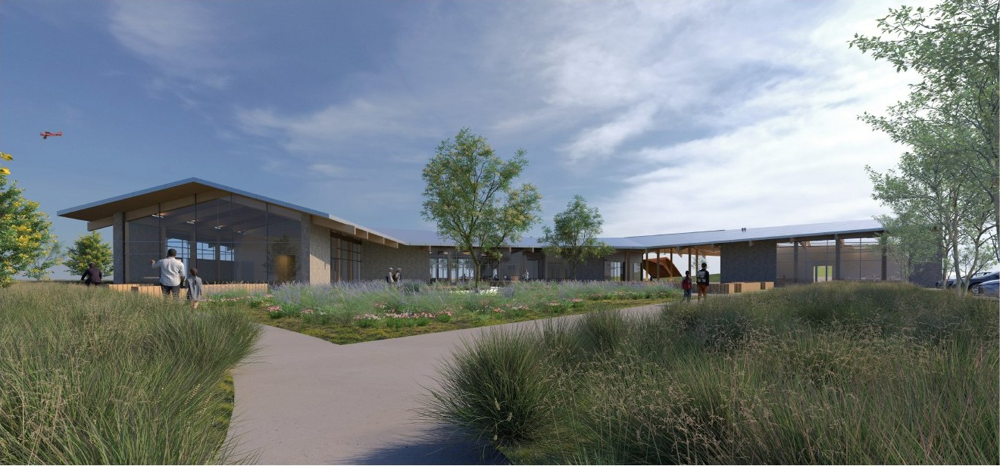
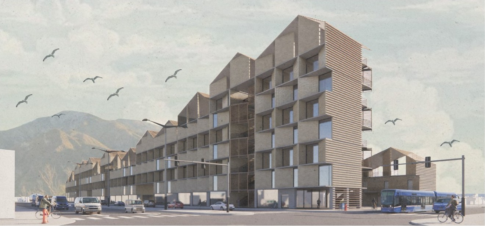
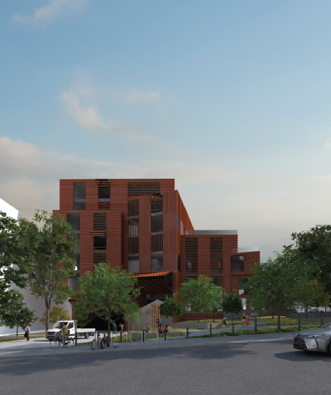
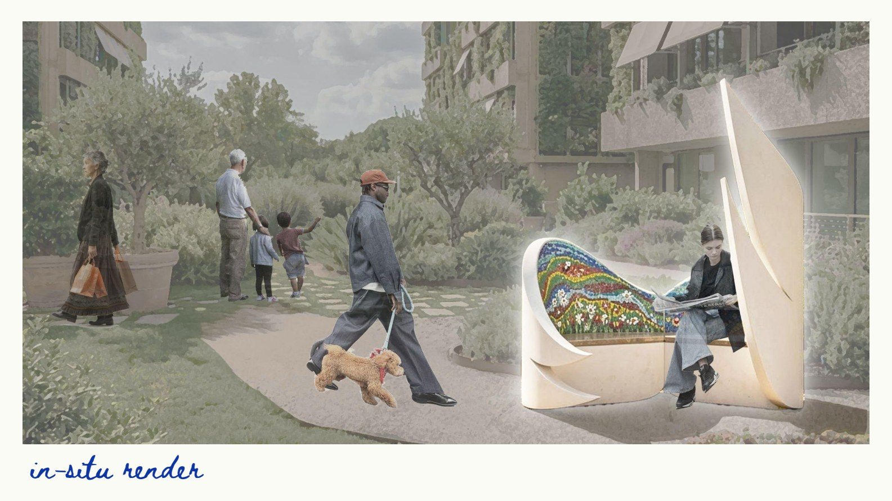
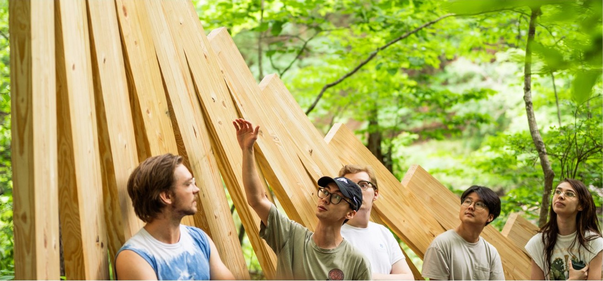
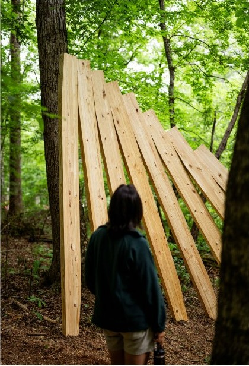
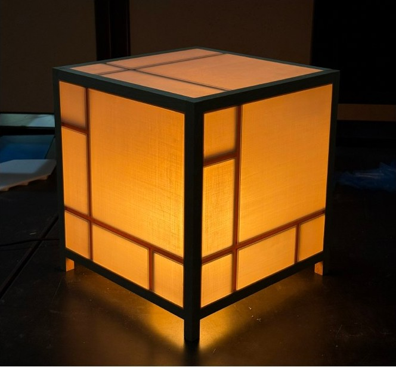

01 / ARCHITECTURE↗
01 / ARCHITECTURE↗
01Reframing
Reframing
the Edge
A team proposal using site analysis and civic architecture to make a city’s edge a place to gather.
VIEW PROJECT IMAGE ↗B. ARCH 2027 — UNIVERSITY OF ARKANSAS
Architecture shaped by people, place, and the act of making.
↓SELECTED WORK / 2024—2026
Nine studies in place, housing, fabrication, and light.
01 / ARCHITECTURE↗
A team proposal using site analysis and civic architecture to make a city’s edge a place to gather.
VIEW PROJECT IMAGE ↗
02 / ARCHITECTURE↗A civic learning center connects the city, its neighborhoods, and Willie George Park. A gable-inspired roof draws from the local industrial landscape; stone, clerestory light, and mass timber bring regional material and environmental thinking into the project.
VIEW PORTFOLIO SPREAD ↗
03 / HOUSING↗A multi-occupancy housing proposal pairs live-work homes with shared outdoor space and ground-floor retail. Its massing rises away from the neighborhood, drawing on the profile of the San Gabriel range while easing toward the surrounding streets.
VIEW PORTFOLIO SPREAD ↗
04 / ARCHITECTURE↗A terraced mass timber hub bringing academic work, fabrication, and public life to Manhattanville.
VIEW PROJECT IMAGE ↗
05 / DESIGN-BUILD↗A two-seat neighborhood chair shaped as a sheltering threshold between public life and private refuge. The proposal was selected for a competition in Rome.
VIEW PROJECT IMAGE ↗
06 / DESIGN + BUILD↗Starting from the life cycle of a tree, our team translated an abstract prompt into a full-scale glulam installation. Scrap-lumber models informed a dowel connection system that lets the hooked members work together along a curve.

FIELD STUDY / THE FOREST FLOOR 07 / OBJECTS + CRAFT↗
07 / OBJECTS + CRAFT↗
A two-sided board pairing an end-grain cutting surface with a metal chessboard epoxied into the reverse.
VIEW PROJECT IMAGE ↗ 08 / OBJECTS + CRAFT↗
08 / OBJECTS + CRAFT↗
An open, freestanding shelf with alternating lengths and a light, sculptural profile.
VIEW PROJECT IMAGE ↗
09 / OBJECTS + LIGHT↗Inspired by Piet Mondrian’s color-field composition, a beech frame holds a 3D-printed inner structure and acrylic panels sanded in two directions. The bedside scale turns the lamp into a study of frame, color, and filtered light.
VIEW PORTFOLIO SPREAD ↗APPROACH / 01—03
Good ideas become stronger when they meet a place, a material, and the people who will use them. I’m drawn to work that joins careful research with hands-on experimentation.
PS / 26ABOUT / PENN SMITH
I’m a fourth-year Bachelor of Architecture student at the University of Arkansas Fay Jones School of Architecture and Design, from Dallas, Texas. I came to architecture through mechanical engineering and found a field where fabrication, creative thinking, and social impact meet.
At the school’s fabrication and model labs, I help students turn ideas into built work. I work with laser cutters, 3D printers, CNC machines, woodshop tools, and model-making processes.
NEXT / CV
CONTACT / OPEN CONVERSATION